Traditional AI assistants generate code. AI-DLC integrates AI into planning, design, implementation, and operations.
AI creates plans and asks for clarification when additional context is needed. Humans provide guidance, and AI continues the workflow.
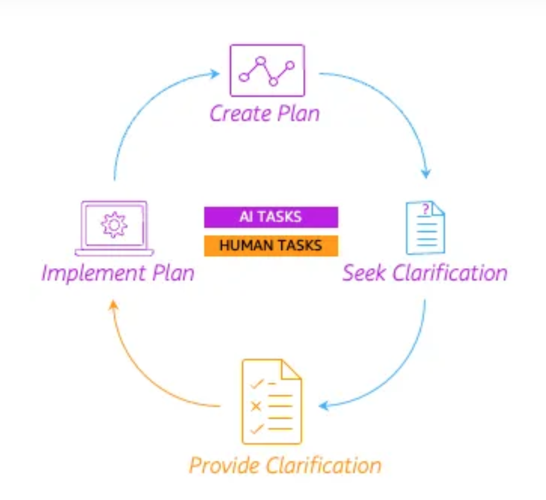
AI-DLC applies the same collaboration model across Inception, Construction, and Operation. Each phase contains reusable AI workflows for specific development tasks.
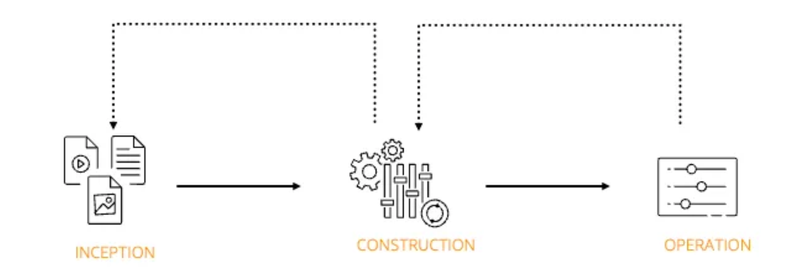
Kiro is an AI-powered development environment that helps developers build software through spec-driven development and powerful automation capabilities.
Kiro uses specifications to define requirements, design, and implementation plans before generating code. This helps improve consistency and collaboration throughout the software development process.
Steering provides project-level guidance, Hooks automate development workflows, and MCP enables Kiro to connect with external tools and services.
VAETKI uses AI to generate images of virtual models wearing clothing or using products. Businesses can quickly create marketing content for different styles, demographics, and campaigns.
VAETKI will leverage AI to dynamically generate personalized shopping experiences based on user requests. Businesses will be able to create customized e-commerce websites with tailored product images, banners, translations, and localized content
AI agents have powerful capabilities, including code execution, tool calling, and data access, but their behavior is difficult to predict. Sandboxing provides a strong security boundary to isolate each agent and protect multi-tenant workloads.
A Kubernetes sandbox provides an isolated runtime environment for AI agents running on shared infrastructure. It helps prevent one agent from affecting other workloads and provides stronger security boundaries.
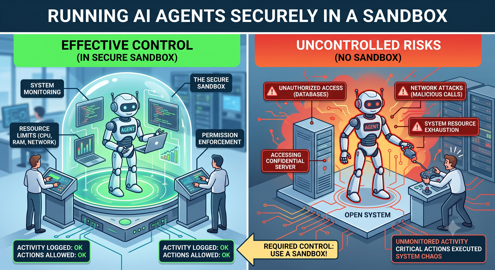
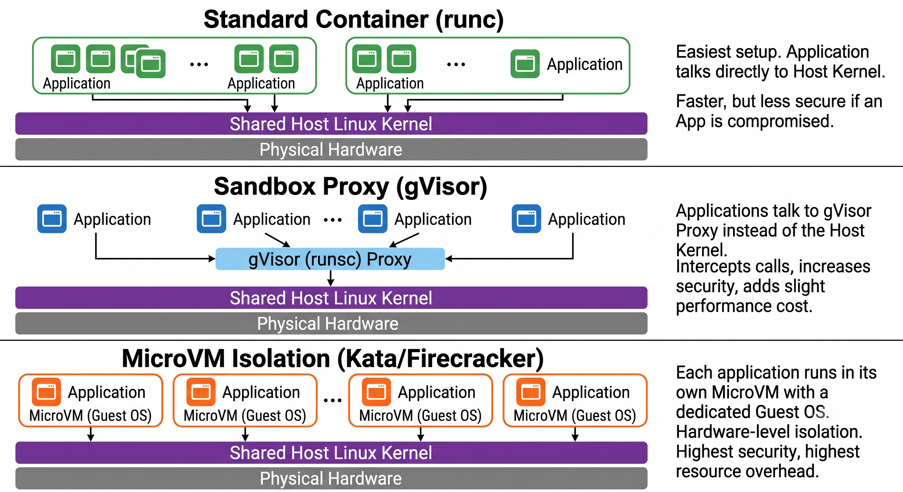
An Application Load Balancer distributes incoming application requests across multiple servers to improve availability and scalability. It acts as a traffic manager that helps applications handle more users reliably.
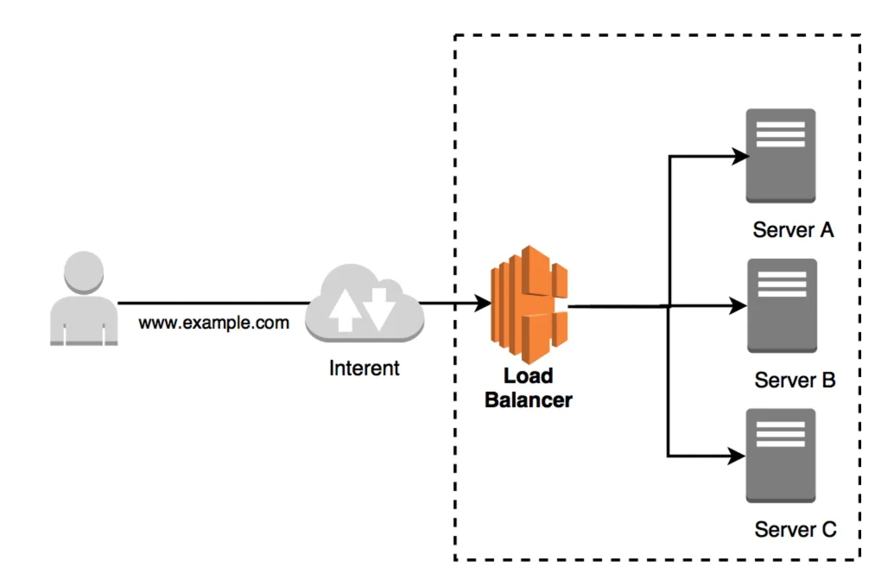
Traditional load balancers use round-robin routing to distribute requests evenly across targets. This works well for general applications but does not consider AI workload characteristics.
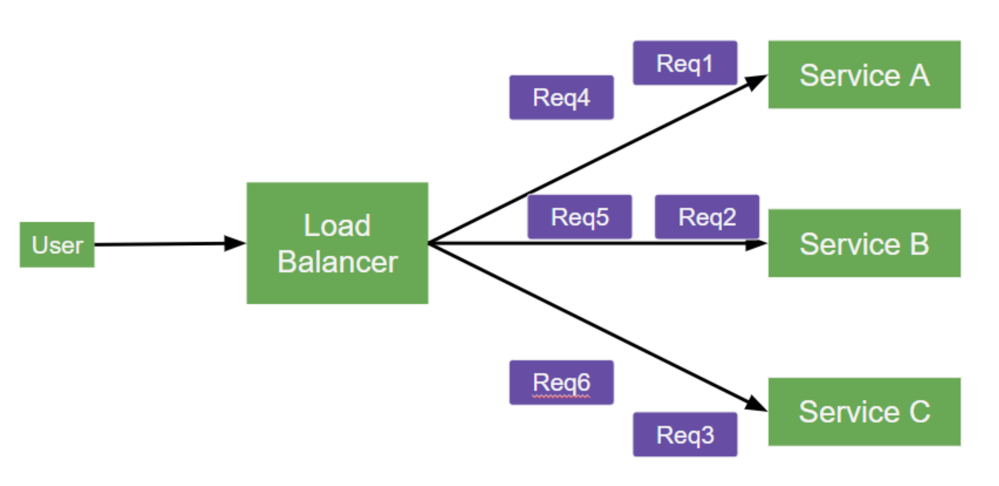
AI inference requests have different resource requirements and processing times. Round-robin routing may cause inefficient resource utilization and uneven workload distribution.
Application Load Balancer Target Optimizer improves AI workload routing by considering the real-time capacity of each target. It helps optimize request distribution and improve inference performance.
The Application Load Balancer agent runs on AI targets and actively sends workload information to the Application Load Balancer. This enables smarter routing decisions based on actual target capacity.
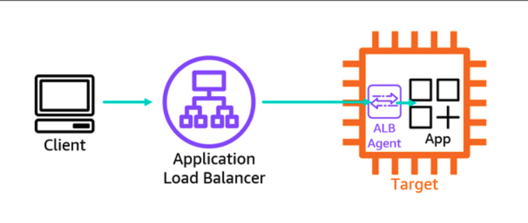
A search engine helps users find relevant information from a large amount of data. It analyzes queries and returns the most useful results.
Lexical search matches keywords between the user query and the documents. It works well when users use the exact terms stored in the data.
Semantic search uses vector embeddings to understand the meaning of queries and documents, enabling more relevant search results beyond keyword matching.
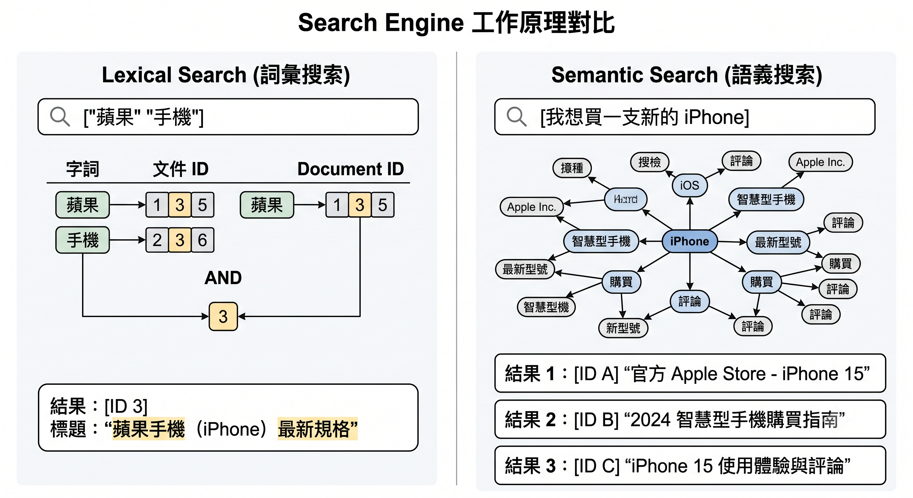
OpenSearch Neural Plugin simplifies vector-based search by integrating embedding models and automating the vector generation process.
Agentic Search enables AI agents to search, reason, and take actions using OpenSearch data. It provides a more intelligent and interactive search experience through natural language.
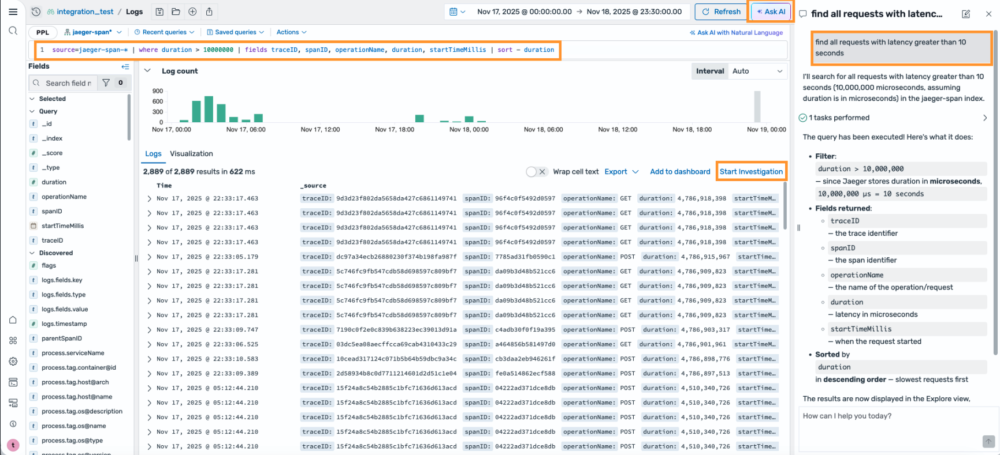
A database is a system that stores and organizes information so applications can efficiently access and manage data. It is a critical component for modern applications.
Database migration is the process of moving data and database structures from one database system to another. It helps organizations upgrade systems, adopt new technologies, or improve scalability.
Different database systems have different data formats, structures, and features. Converting schemas and ensuring data consistency often requires significant manual effort.
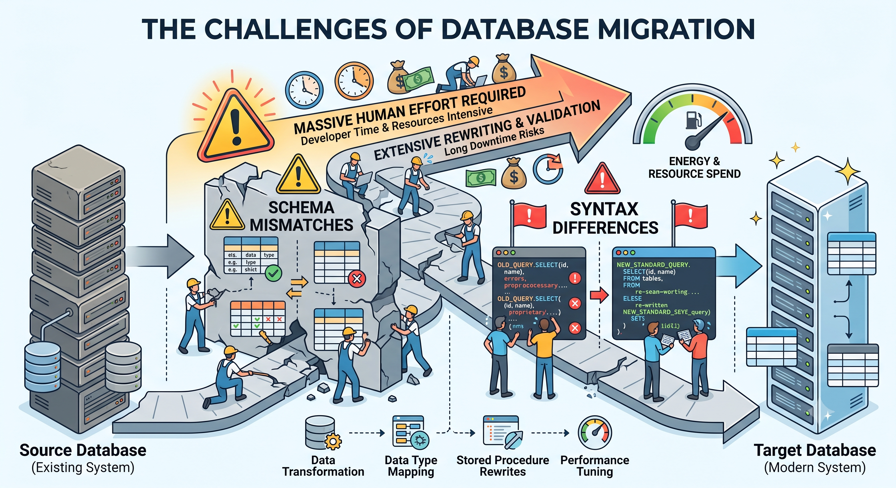
AWS Database Migration Service uses AI to help automate schema conversion between different database systems. It analyzes database structures, suggests conversions, and reduces the effort required for migration.
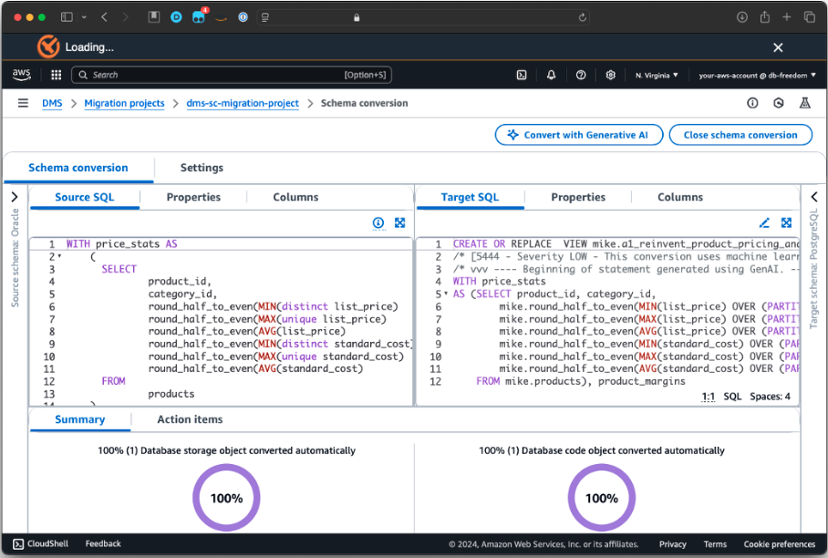